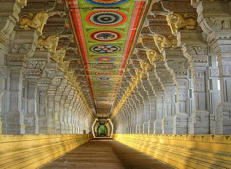
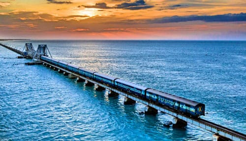
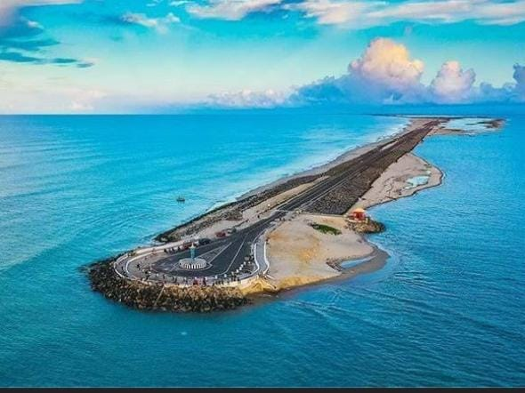
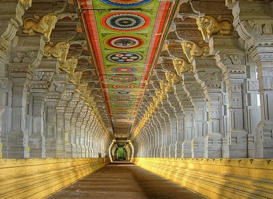
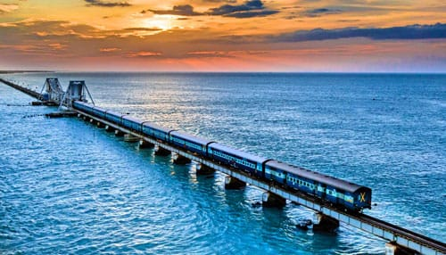
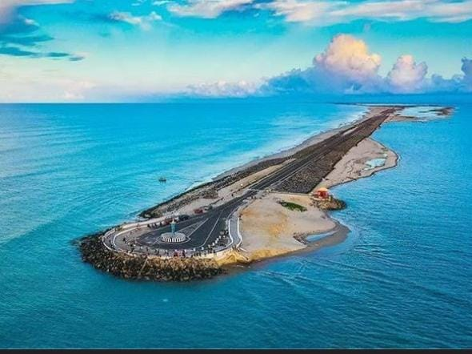
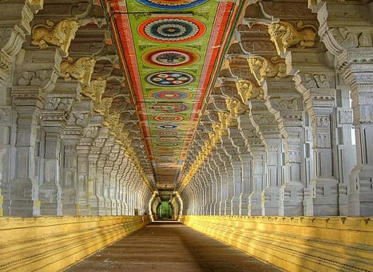
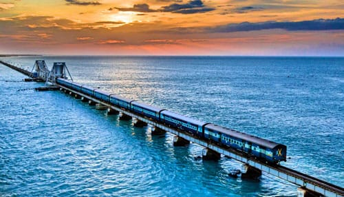
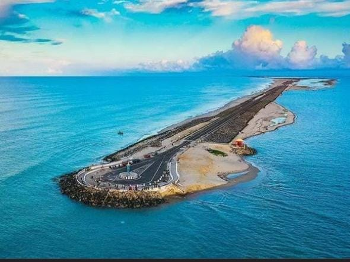

Here, hymns and chants fill the air, creating a mesmerizingly hallowed ambiance. As the sea waves rise, so do the emotions in the minds of millions of devotees. Rameswaram is a vibrant destination, so divine and so very poetic.
At the very tip of the Indian peninsula lies Rameswaram, a serene strip of land that boasts of spectacular natural beauty. Renowned for being a pilgrimage destination, Rameswaram is home to the famous Ramanathaswamy Temple, known for its elaborate corridors and splendidly sculpted pillars. Though lying separated from the mainland of India in the Pamban Island, Rameswaram is connected to the mainland by the magnificent Pamban Bridge.
Considered one of the holiest places for Hindus in India and one among the four Char Dham pilgrimage sites, Rameswaram is also the closest point to Sri Lanka from India. Geological evidences state that once India was connected to Sri Lanka from this point via the Rama Sethu bridge. This quaint town has from time immemorial been a place of great interest and admiration to travellers.



It is believed that Lord Rama, on his return after his war with Ravana, offered a repentance prayer to Lord Shiva to absolve his sins he had to commit during the confrontation. One version suggests that the Shiv Linga or the idol in the temple was built as a part of his worship. Another version is that the Shiv Linga was built before his trip to Lanka. However, the temple and the tales that surround it has been a factor of popularity for the town.
Places to be Visit
Pamban Bridge
One of India’s finest engineering marvels in India is the much-acclaimed Pamban rail bridge in Rameswaram that connects the island of Rameswaram to the mainland. The Pamban bridge holds historical significance as the first-ever bridge built across the sea in India.
The efforts for the construction of the Pamban rail bridge began as early as in the 1870s when the British government decided to expand trade connectivity to Sri Lanka. Stretching to about 2.2 km, and with 143 piers, it was officially commissioned in 1914. It is the second-longest sea bridge in India after Mumbai’s Bandra-Worli Sea Link.
The Pamban Rail Bridge works on the Scherzer rolling lift technology to allow ferry movement, which opens upwards at an angle of 90 degrees. The Pamban Bridge has always been marvelled at during the train journeys that offer jaw-dropping views of the blue expanse of the Arabian Sea.
Ram Sethu
Rameswaram has a vast number of pilgrims visiting its religious destinations as it is considered one of the four holy sites (Char Dham) among Hindus. One such destination that has great religious importance in Rameswaram is the Ram Sethu bridge.
There are many fascinating mythological tales that narrate the reason for its existence. Ram Setu is mentioned in the epic Ramayana, as the bridge constructed by Lord Rama and his vanara (monkey) army. The bridge was constructed to cross over to Lanka to rescue Goddess Sita from the clutches of the demon king Ravana. In Valmiki’s Ramayana, the bridge is described as Sethubanthan.
As per other legends, it is also known as Adam’s bridge because according to the Bible and the Quran, the first man Adam travelled through the natural bridge to reach Adam’s peak in Sri Lanka. The name is believed to have been given by an East India Company cartographer who, after considering Abrahamic belief about the bridge, used the name Adam’s Bridge on his map.
 




